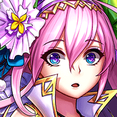

So they've befouled even the pure waters of Mirror Lake.
Zeruiah
It feels like a distant memory now. The gentle, rippling breeze across the surface. The tinkling voices of Fae children.
Zeruiah
To think that this magnificent lake nourished not only our great Mother Tree,
Zeruiah
but also the rebirth of an outerworld goddess.
Zeruiah
Even the traces of *her*, vibrant footsteps from one born of light,
Zeruiah
now darkened and twisted like so much of the dead.
Zeruiah
What good is a guardian, when her land withers so?
Zeruiah
I am pleased to see you well. Sky Father has granted his blessing upon you.
Indeed. But it is all thanks to the safe haven that is this Vale.
Juno-Seto
I cannot express my gratitude enough. It is through your aid that I am reborn...
Juno-Seto
I am eternally grateful to you for sheltering my people.
Zeruiah
As a sworn protector born of prayer, I too understand the impetus to put one's people before yourself.
Zeruiah
Even across planes of existence, I am heartened to find a noble soul.
The goddess and the sage rest in amicable silence, looking out across Mirror Lake, so named for its reflective, crystal-clear surface.
Juno-Seto shifts a little, a small, sad smile quirking at her lips.
Juno-Seto
I think it's time for us to leave. My people have overstayed your generous welcome.
Zeruiah
I do not particularly mind, but...where will you go?
Juno-Seto
The sun of your world beckons from the East. I will walk once more with the light, as I did so long ago.
Zeruiah
Hmm. The Eastern Plains. Steeped in the warm embrace of Sky Father, and tousled by a gentle breeze.
Zeruiah
Unfortunately, that is all I know. I have rarely left the Vale.
Juno-Seto
And that is enough for me to go on. It will make a beautiful new home for my people.
Juno-Seto
Thank you for everything, Zeruiah.
Zeruiah
Uncertainty nibbles at you.


Juno-Seto
How did you know?
Zeruiah
I sense an unease deep within. What troubles you?
Zeruiah
Forgive me. That was intrusive.
Juno-Seto
You are a beloved friend to me, my dear Zeruiah.
Juno-Seto
I'll miss your company. That's all.
Juno-Seto
The Vale is like a home to me. I am loath to leave, but...
Juno-Seto
Surely you understand.
Zeruiah
You and your people will always be welcome in the Vale. Whenever you feel like visiting.
Juno-Seto
I look forward to it.
Zeruiah
I remember the look on your face that day, Juno.
Zeruiah
I didn't ask after it, but I knew there was more.
Zeruiah
Why didn't you tell me?


{kind=link}
{kind=link}